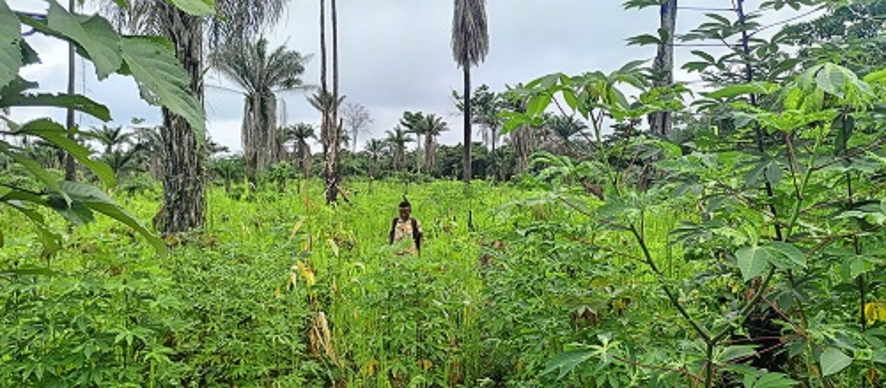

Nessian Family Organization NEFOR

DEPARTMENT OF AGRICULTURE
Agriculture is the very first focus point of the Nessian Family Organization NEFOR.
The Agriculture pillow of the Nessian Family Organization is resposible for
the production of food and livestool. The resposibilities of any Family is to have the ability to feel itself and other
living around them, so the Nessian Family Organization NEFOR, have a
pillow that is for the production of food and the growing of plant and livestool.
Although our parents in those days live on Agriculture, but it was a subsistance farming which would not benifit them.therefore,
our MISSION and Vision is to do a modern farmilmg such as growing of cassava, rice, oil palm and tree corps
such as cocoa and coffee in a large scare that will benifit our's community, county's and Nation. Presently,
we are engaged in the growilng of rice and Cassava. The Agriculture department is headed by
 Edwin
Paye Nessian who is the CEO of the Nessian Family Organization.
He holds a Bsc in general Agriculture from the University of Liberia.
As a family or Organization,
we beliveed in the growing of our own food and be able to fees ourselve, our's communit and Nation at large.
The resposibilities of the director of Agriculture is to make sure that Nessian Family make
a farm every farming season and to be to connect the Organization with Donor in and outside of Liberia
and those who want to be in partnership with the Agriculture department of NEFOR. For any donation or
partnership to our Agriculture department,
please get to us on the contact us page or through our official FACEBOOK page.